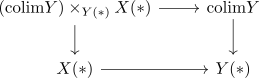
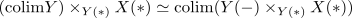
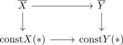

colimit cone and cartesian transformation in Anima
Proposition
Let $I$ be a In this exercise, you may use the following fact about colimits in anima. Let $I$ be a small \(\infty\)-category and and let $\bar{\tau} \colon \bar{X} \to \bar{Y}$ a natural transformation of functors $P \to \text{An}$. Suppose $\bar{Y}$ is a colimit cone and that $\tau = \bar{\tau}_|I: X \to Y$ is a cartesian transformation of functors $I \to \text{An}$, where $X = \bar{X}_{|I}$ and $Y = \bar{Y}_{|I}$. That is, for all morphisms $i \to j$ in $I$, the squaree
use:
- https://ncatlab.org/nlab/show/pullback-stable+colimit
- + cartesian trafo ~> determined by cone points & pullback pasting
- assume natural trafo
- set Z = colim
- y as colim cone
- then argue:
- universal colimit and base change preserving colimits
Proof
1) $\implies$ 2)
Let $Y(*) \simeq \mathrm{colim} Y$ be the colimit cone where $*$ denotes the cone of $I^{\lefttriangle}$. Then consider the pullback diagram

By colimits in anima are universal we get

But the diagram
describes by pointwise construction of limits the diagram $X(-)$ since the natural transformation $\overline{\tau}$ is a cartesian transformation where we consider

which is pointwise a limit
(wonky)
v
2) $\implies$ 1)
i dont know ?
maybe it's true
- fibrations satisfy descend ?